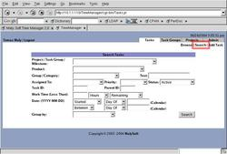

Task searching provides a powerful way to find just the tasks you want. Whether you are inquiring about certain tasks, need to work on important ones, or just want to find out what tasks you can get done before you leave work, the task searching module provides the power you need. Keeping any item in the form blank means that that particular criteria doesn't matter.
- Opening the Search page
- Project / Task Group / Milestone
- Product
- Group / Category
- Text
- Assigned To
- Status
- Task ID / Parent ID
- Work Time
- Dates
- Group By
-
Search Submission
See Also:
- Opening the Search page:
- Project / Task Group / Milestone:
- Product:
- Group / Category:
- Text:
- Assigned To:
- Status:
- Task ID / Parent ID:
- Work Time:
- Dates:
- Group By:
- Search Submission:
From the main window, you can get to the Task Search page by clicking on the 'Search' button while on the Task Management Console
This list says which product (with an optional version) to search by. 'None' means that there is no product specified in the task, whereas the blank entry in the list means that it doesn't matter.
The group/category specifies what task category (or group that the category is in) to search by. Keeping the drop-down blank means it doesn't matter.
The 'Assigned To' searches by the task's owner. 'Unassigned' means that there is none, whereas keeping the value blank means that the owner doesn't matter, even if there is none.
The 'status' criteria specifies the task's status. 'Active' means that it is neither canceled nor completed -- it's still being worked on. 'Overdue' means that the due date has already passed (or is today).

The 'Task ID' is the unique numerical ID given to a task. The 'Parent ID' searches for subtasks/dependencies who have parent tasks matching that ID.
The 'work time' criteria specifies how much time a task has left to finish or has total, such as if you want to find what tasks you have time for today to complete, before you leave work.
The 'Date' criteria specifies to search among the dates recorded in the tasks. Specifying 'Between' will make use of two dates, whereas all other ranges only require one date.
The 'Group By' drop-down list specifies how to arrange the list once you click on 'Search'. This enables you to organize based upon some common criteria, such as grouping by owner or by priority. One can even group by the due date or due week.
Once you fill out the form, clicking on 'Search' will display the results. Clicking on a task will go to the respective edit page. As well, you can also perform bulk simultaneous changes on one or more tasks.